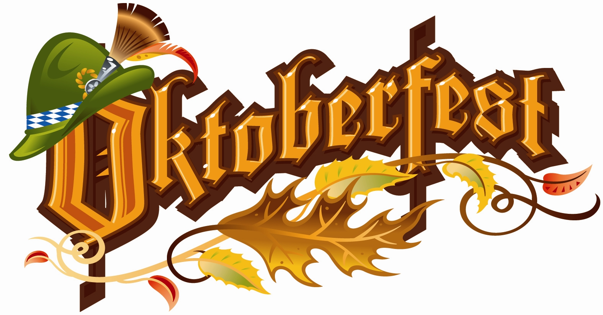

Home Shire Germany England Gallifrey
Oktoberfest (German pronunciation: [?k'to?b??f?st]) is the world's largest Volksfest (beer festival and travelling funfair). Held annually in Munich, Bavaria, Germany, it is a 16 – 18-day folk festival running from mid or late September to the first weekend in October, with more than 6 million people from around the world attending the event every year. Locally, it is often called the Wiesn, after the colloquial name for the fairgrounds (Theresienwiese). The Oktoberfest is an important part of Bavarian culture, having been held since 1810. Other cities across the world also hold Oktoberfest celebrations that are modelled after the original Munich event.
I am far from a violent man, but I would love to travel to England and be a part of a football club's hooligans for a day. I don't want to fight or cause chaos, but the singing and chanting before and after a match is where the real excitement and energy takes place. The fans make the match fun, and I want to experience that once in my life.
